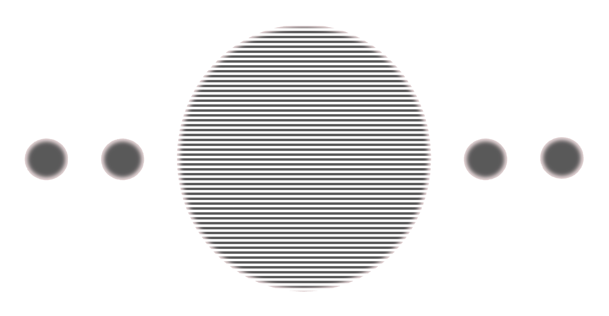

Europa Waters
LLC
Named for Jupiter's moon — a world of ice and hidden oceans where life might thrive in the dark. A reminder that the most profound things are often out of sight.
NASA — Eyes on the Solar System
Galilean Moons — tap a moon to explore
